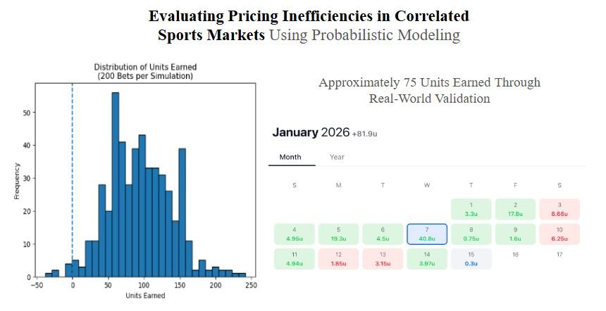

Work
Selected Projects

Evaluating Pricing Inefficiencies in Correlated Markets Using Probabilistic Modeling
Built a pricing framework from scratch to identify and quantify inefficiencies in correlated multi-outcome markets using conditional probability, validated through Monte Carlo simulation and live real-world execution.
- Modeled correlated joint probabilities using conditional probability (estimated true rates of ~15-17% vs market-implied ~12%)
- Identified consistent 3-5 percentage point pricing gaps indicating positive expected value
- Validated via Monte Carlo simulation: 500 runs × 200 events, profitable in 98.6% of scenarios
- Real-world results (+75 units across 100-150 live observations) closely aligned with simulation expectations
Retail Sales Exploratory Analysis – Tableau Dashboard & SQL
End-to-end EDA on 10,000+ retail records surfacing actionable insights on product performance, regional gaps, and discount strategy.
- Identified low-margin product lines, high-loss states, and inconsistent discounting via SQL aggregation and filtering
- Built an interactive Tableau executive dashboard with filters, KPIs, and profit margin breakdowns
- Delivered a business report with strategic recommendations to improve profitability and optimize discount ranges
Sales KPI Dashboard – Power BI & SQL
Connected analytics pipeline from SQL Server to Power BI delivering a live filterable dashboard tracking revenue, AOV, and store performance.
- Wrote optimized multi-table SQL queries to calculate revenue, AOV, and top-selling products
- Connected SSMS to Power BI and built an interactive slicer-driven dashboard
- Demonstrated end-to-end analytical skills from raw data wrangling to business-ready reporting
Experience
Work History
CC
Data Analyst Intern
Canterbury Consulting · Internship
Feb 2026 – Present · Newport Beach, CA · Hybrid
- Designing an enterprise RAG system on Azure as a pilot to test AI-powered search across 5-15 investment strategies, integrating Blob Storage, Document Intelligence, and AI Search with metadata-filtered indexing and compliance controls
- Automated reporting in Power BI by migrating manual Excel workflows into dynamic, refreshable dashboards across multiple asset classes, improving data consistency across client deliverables
- Built an intelligent email intake pipeline in Power Automate that classifies incoming quarterly call requests against a firm directory and routes unmatched contacts to an AI-assisted human review process
- Designed and deployed Power Automate workflows for compliance folder auto-generation, SharePoint list archiving, and diligence completion notifications, saving multiple hours per process across 3 departments
CSUF
Student Lab Assistant
California State University, Fullerton · Part-time
Aug 2025 – Feb 2026 · Fullerton, CA · On-site
- Guided 40+ students in applying SQL, Python, and BI tools including Tableau, Power BI, Excel, and Alteryx to solve real-world business analytics problems
- Collaborated closely with faculty to develop data-driven course materials by leveraging Python and Alteryx to compile, clean, and structure data from source files into instructional-ready datasets
- Delivered live demonstrations of analytics tools and workflows to students from diverse majors, reinforcing practical understanding of data-driven decision-making
NHC
Business Intelligence Analyst Intern
New Home Co. · Internship
Jun 2025 – Jul 2025 · Irvine, CA · On-site
- Built production-ready SSRS reports using SQL (aggregations, joins, stored procedures) across enterprise databases, enabling land acquisition teams to optimize decisions around active developments and surface emerging issues
- Pioneered the first centralized HubSpot dashboards for the organization during a CRM migration where no prior reporting infrastructure existed, meeting with marketing and sales teams to align on KPIs and replicating standardized performance visibility across 7 U.S. divisions
- Worked with internal stakeholders and external technical consultants to demonstrate dashboards, investigate data anomalies and missing fields, and clearly communicate data limitations and integration constraints
Bts
Qualitative & Quantitative Insights Extern
Beats by Dre · Externship
Dec 2024 – Mar 2025 · Remote
- Analyzed 4,000+ customer survey responses with Pivot Tables to surface key trends in customer preferences and satisfaction drivers, supporting cross-team decision-making on retention strategy
- Used Python and Gemini API to perform sentiment analysis on Amazon product reviews, benchmarking brand perception against three competitors to identify relative strengths and weaknesses